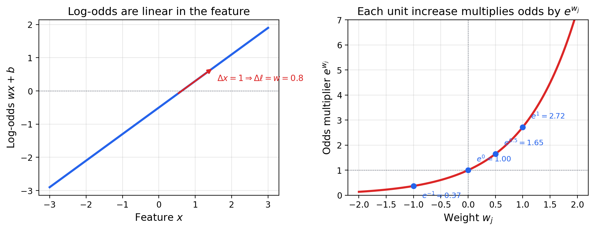
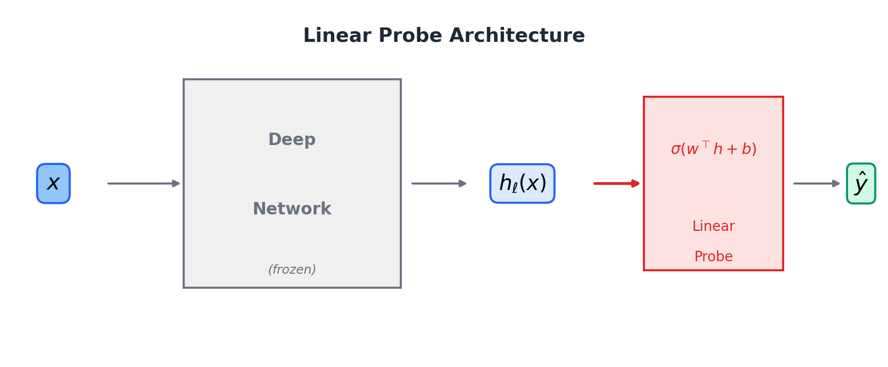
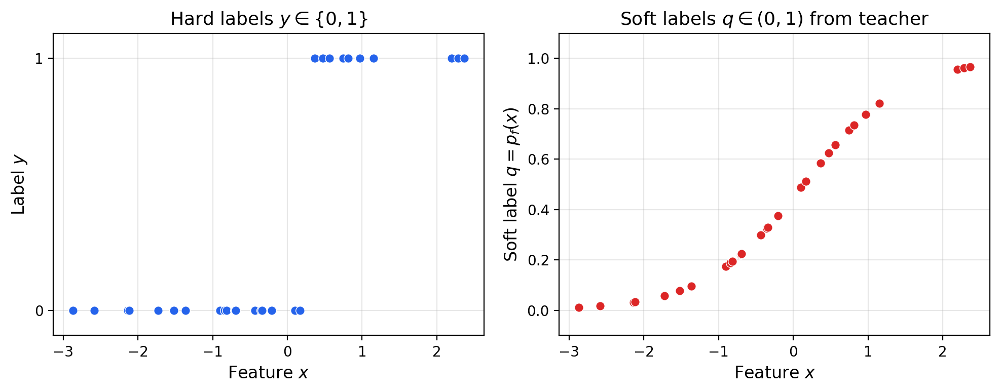
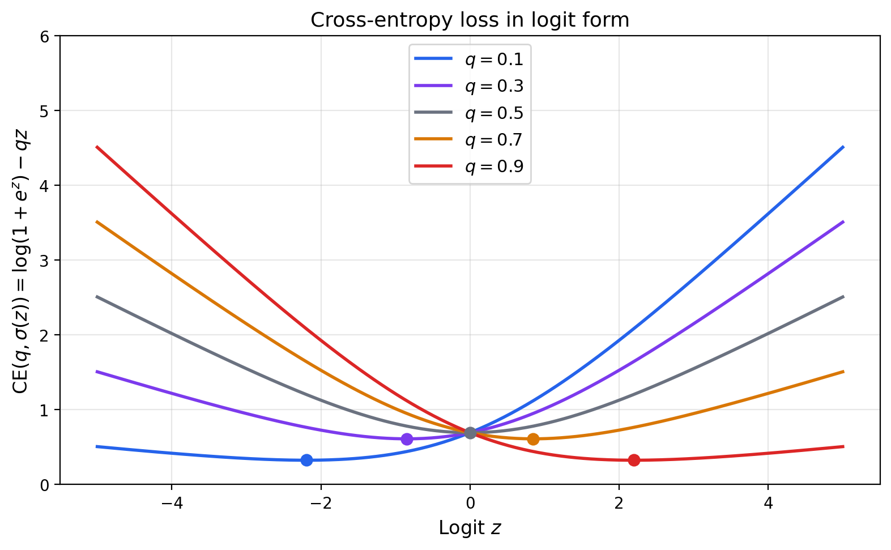
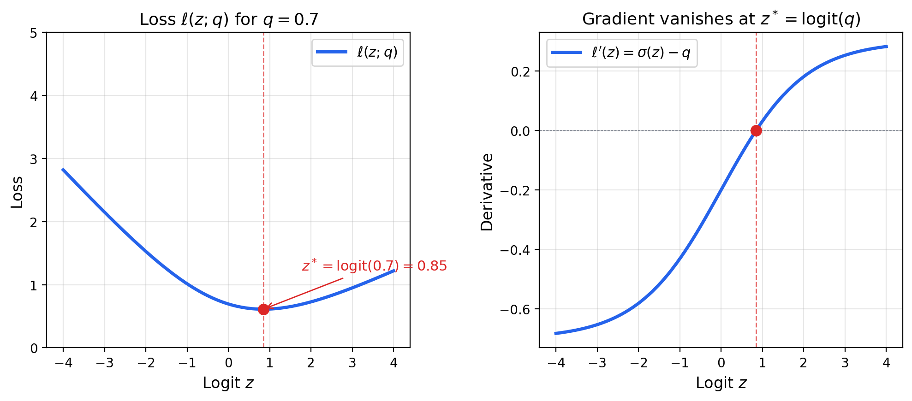
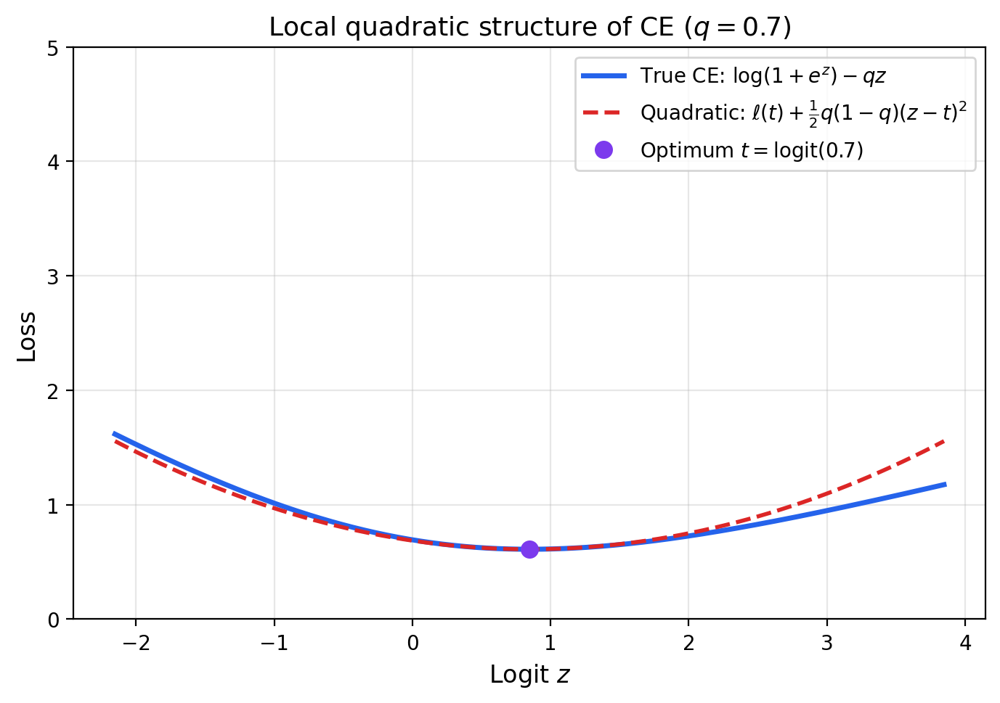
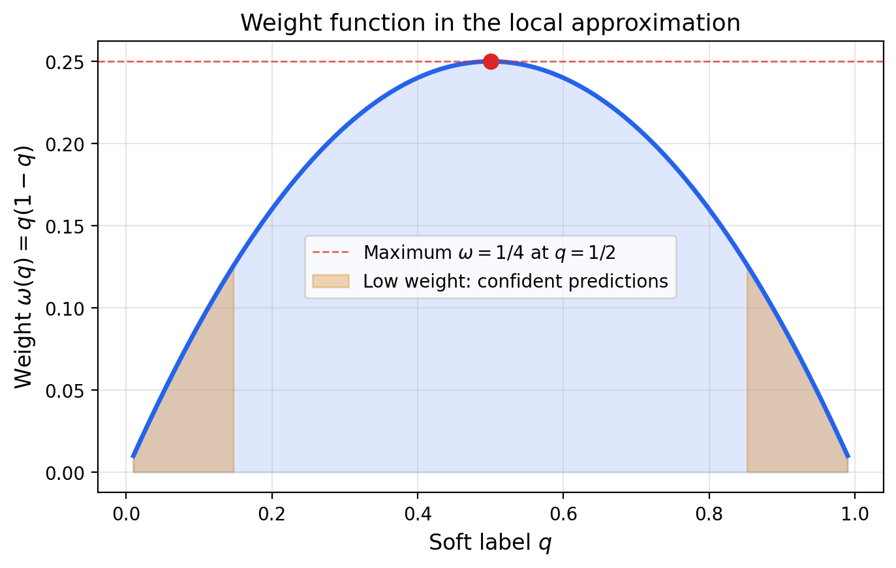
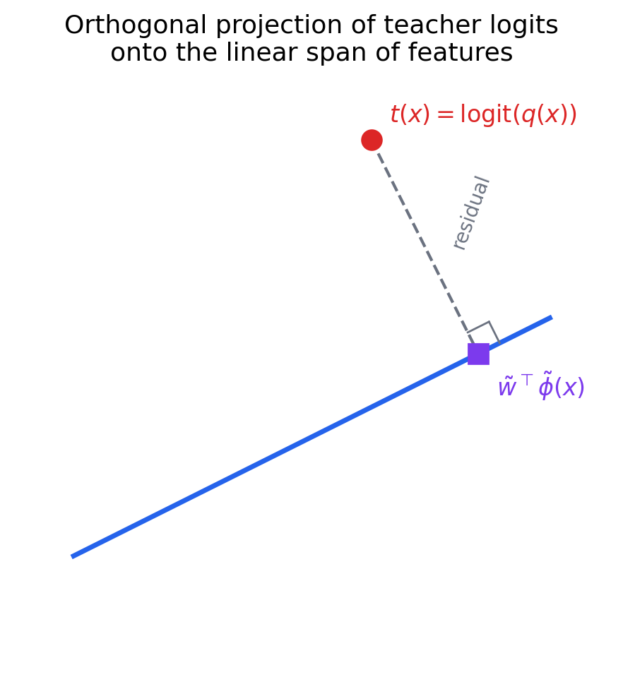

The sigmoid neurons article established logistic regression as a principled probabilistic classifier: the model $P(y=1 \mid x) = \sigmoid(w^\top x + b)$ arises from maximum likelihood on Bernoulli labels, the cross-entropy loss is convex, and the weights have a clean interpretation as log-odds-ratio multipliers. The spam detection article put this to practical use, showing how the weight on a feature like "free" translates directly to a 34-fold increase in the odds of spam.
But logistic regression's interpretability goes far beyond explaining its own predictions. In modern deep learning, logistic regression has become a standard tool for understanding other models—complex, opaque systems whose internal representations we would like to decode. The idea is simple: if a linear model can predict a property from a model's hidden activations, then that property is linearly encoded in the representation. This technique, the linear probe, has become one of the most widely used methods in mechanistic interpretability.
This article develops the mathematical theory behind using logistic regression to interpret complex models. We begin with a careful treatment of how weights encode feature importance through the log-odds, then move to the key setting: fitting logistic regression to the soft probability outputs of a teacher model. A beautiful result emerges—near the optimum, this cross-entropy minimization reduces to weighted least squares regression in logit space. This connects logistic regression to linear algebra, projection, and function approximation in a way that makes the interpretability story precise.
Recall from the sigmoid neurons article that the log-odds of the logistic regression model are linear in the features. For $p_w(x) = \sigmoid(w^\top x + b)$, define the log-odds function:
$$ \ell_w(x) := \log \frac{p_w(x)}{1 - p_w(x)} = w^\top x + b $$This follows from the algebraic identity $\sigmoid(z) / (1 - \sigmoid(z)) = e^z$, so that $\log(\sigmoid(z)/(1 - \sigmoid(z))) = z$.
Since $\ell_w(x) = w^\top x + b$ is linear, each coefficient is the partial derivative of the log-odds with respect to its feature:
$$ \boxed{w_j = \frac{\partial}{\partial x_j} \log \frac{p_w(x)}{1 - p_w(x)}} $$This is a remarkably clean statement: $w_j$ tells you exactly how much a one-unit increase in feature $x_j$ shifts the log-odds, holding all other features constant.
Increasing feature $x_j$ by $\Delta$ while keeping all other features fixed changes the log-odds by $\Delta w_j$. Since log-odds differences become odds ratios under exponentiation:
$$ \frac{\text{odds}_w(x + \Delta e_j)}{\text{odds}_w(x)} = e^{\Delta w_j} $$For a unit increase ($\Delta = 1$), the odds are multiplied by $e^{w_j}$. A weight of $w_j = 0.5$ means each unit increase in $x_j$ multiplies the odds by $e^{0.5} \approx 1.65$—a 65% increase. A weight of $w_j = -1$ means each unit increase multiplies the odds by $e^{-1} \approx 0.37$—a 63% decrease.

This interpretability—every coefficient has a precise, quantitative meaning—is why logistic regression remains the default model in medicine, economics, and social science, even when more complex models might improve accuracy.
The weight interpretation above applies to logistic regression's own predictions. But the real power emerges when we use logistic regression as a lens to understand other models. There are two principal settings.
Given a deep network that has learned a representation $h_\ell(x)$ at layer $\ell$, freeze the network's parameters and fit a logistic regression model on the representation:
$$ P(y = 1 \mid x) = \sigmoid(w^\top h_\ell(x) + b) $$The learned weight vector $w$ reveals which directions in representation space encode the label. Each $w_j$ is the partial derivative of the probe's log-odds with respect to representation dimension $j$:
$$ w_j = \frac{\partial}{\partial h_{\ell,j}} \log \frac{P(y=1 \mid x)}{P(y=0 \mid x)} $$If the probe achieves high accuracy, the label is linearly encoded in the representation. If it does not, the information is either absent or encoded nonlinearly.

A second setting is model distillation for interpretability. Given a complex black-box model $f$ that produces probabilities $p_f(x)$, we fit a logistic regression surrogate:
$$ p_w(x) \approx p_f(x) $$The surrogate's weights $w$ provide a linear explanation of the black box's behavior. This is the core idea behind methods like LIME (Local Interpretable Model-agnostic Explanations): approximate a complex model locally with a simple, interpretable one.
In both settings, we are fitting logistic regression not to hard labels $y \in \{0, 1\}$ but to the soft probabilities output by another model. This raises a precise mathematical question: what objective should we optimize when the labels are soft?
When the teacher model provides soft labels $q_i := p_f(x_i) \in (0, 1)$, we can no longer use the standard cross-entropy with binary targets. Instead, we generalize to the cross-entropy with soft labels:
$$ \mathrm{CE}(q_i, p_i) := -\left[q_i \log p_i + (1 - q_i) \log(1 - p_i)\right] $$where $p_i := \sigmoid(w^\top \phi(x_i) + b)$ is the student model's prediction and $\phi(x)$ denotes the feature map (which could be raw features $x$, or a deep network's hidden representation $h_\ell(x)$).

The empirical loss to minimize is:
$$ \mathcal{L}(w, b) := \frac{1}{n} \sum_{i=1}^n \mathrm{CE}(q_i, p_i) $$Note that this reduces to the standard binary cross-entropy when $q_i \in \{0, 1\}$. The mathematical form is the same but the interpretation of the $q_i$ is different.
Working directly with probabilities is algebraically cumbersome. A key simplification comes from rewriting the cross-entropy in terms of the logit $z = w^\top \phi(x) + b$:
$$ \boxed{\mathrm{CE}(q, \sigmoid(z)) = \log(1 + e^z) - qz} $$To derive this, substitute $p = \sigmoid(z)$ and use the identities:
$$ \log p = \log \sigmoid(z) = z - \log(1 + e^z) $$ $$ \log(1 - p) = \log(1 - \sigmoid(z)) = -\log(1 + e^z) $$Then:
$$ \mathrm{CE}(q, p) = -q\log p - (1-q)\log(1-p) = -q[z - \log(1+e^z)] + (1-q)\log(1+e^z) $$ $$ = -qz + q\log(1+e^z) + \log(1+e^z) - q\log(1+e^z) = \log(1+e^z) - qz $$The logit form $\ell(z; q) = \log(1 + e^z) - qz$ is elegant: it is a function of a single scalar $z$, parameterized by the soft label $q$. The function $\log(1 + e^z)$, sometimes called the softplus, provides the curvature, while $-qz$ is a linear tilt that shifts the minimum.

With the loss in logit form, we can find its minimum by differentiation. The per-point loss is:
$$ \ell(z; q) = \log(1 + e^z) - qz $$Differentiating with respect to $z$:
$$ \frac{d\ell}{dz} = \frac{e^z}{1 + e^z} - q = \sigmoid(z) - q $$Setting the derivative to zero gives $\sigmoid(z^*) = q$, and applying the logit (the inverse of the sigmoid):
$$ \boxed{z^*(x) = \logit(q(x)) = \log \frac{q(x)}{1 - q(x)}} $$This result has a striking interpretation: fitting logistic regression to soft labels is trying to match the teacher's logits with a linear function. The optimal logit $z^*$ at each point $x$ is exactly the teacher model's own logit. The student model tries to find a linear function $w^\top \phi(x) + b$ that best approximates the nonlinear function $\logit(q(x))$ across all data points.

This is a key insight. The cross-entropy objective, which lives in probability space, is secretly performing function approximation in logit space. The student is not trying to match the teacher's probabilities directly—it is trying to match the teacher's logits.
The connection to least squares becomes precise through a second-order Taylor expansion. Let $t = \logit(q)$ denote the teacher's logit, so that $q = \sigmoid(t)$. Expand $\ell(z; q)$ around the optimum $z = t$:
First derivative at $z = t$:
$$ \ell'(t) = \sigmoid(t) - q = q - q = 0 $$This vanishes by construction—$t$ is the optimum.
Second derivative at $z = t$:
$$ \ell''(t) = \sigmoid'(t) = \sigmoid(t)(1 - \sigmoid(t)) = q(1 - q) $$The second derivative is the variance of a Bernoulli random variable with parameter $q$. The Taylor expansion gives:
$$ \ell(z; q) \approx \ell(t; q) + \frac{1}{2} q(1 - q)(z - t)^2 $$Near the optimum, the cross-entropy loss is locally quadratic in the logit error $z - t$, with curvature $q(1-q)$.

The quadratic approximation at each data point combines into a global result. Write $z(x) = w^\top \phi(x) + b$ for the student's logit and $t(x) = \logit(q(x))$ for the teacher's logit. Aggregating over the data distribution:
$$ \boxed{\min_{w,b}\; \E_x\left[\omega(x)\left(w^\top \phi(x) + b - t(x)\right)^2\right], \quad \omega(x) = q(x)(1 - q(x))} $$This is weighted least squares regression of the teacher's logits onto the features. Each data point is weighted by $\omega(x) = q(x)(1-q(x))$, the curvature of the cross-entropy at that point.
The weight function $\omega(q) = q(1 - q)$ has an intuitive interpretation:
This makes sense: the logit function diverges as $q \to 0$ or $q \to 1$, so confident predictions correspond to extreme logits that are hard to fit precisely. The cross-entropy naturally downweights these points.

A significant simplification occurs when the weight function $\omega(x) = q(x)(1-q(x))$ is approximately constant across the data. Since the minimizer of a weighted least squares problem does not change when all weights are multiplied by the same positive constant, constant weights reduce to ordinary least squares:
$$ \boxed{(w, b) \approx \argmin_{w,b}\; \E\left[\left(w^\top \phi(x) + b - t(x)\right)^2\right]} $$When does this hold? The weight function is approximately constant when the teacher's soft labels are not too extreme—when most of the probability mass of $q(x)$ lies away from 0 and 1. In practice, this is often a reasonable approximation for the middle layers of deep networks, where representations are not yet sharply committed to a class.
The ordinary least squares problem has a geometric interpretation that connects logistic regression to linear algebra and functional analysis. Define the augmented feature vector $\tilde{\phi}(x) = [\phi(x); 1]$ and the augmented weight vector $\tilde{w} = [w; b]$, so that $w^\top \phi(x) + b = \tilde{w}^\top \tilde{\phi}(x)$.
The OLS problem minimizes $\E[(\tilde{w}^\top \tilde{\phi}(x) - t(x))^2]$. Setting the gradient to zero gives the normal equations:
$$ \boxed{\E[\tilde{\phi}\,\tilde{\phi}^\top]\,\tilde{w} = \E[t\,\tilde{\phi}]} $$This is the standard normal equation of linear regression: the covariance matrix of the features times the weight vector equals the cross-covariance of the features with the target.
The normal equations say that the residual $t(x) - \tilde{w}^\top \tilde{\phi}(x)$ is orthogonal to every feature $\tilde{\phi}_j(x)$ in the $L^2$ inner product:
$$ \E\left[(t(x) - \tilde{w}^\top \tilde{\phi}(x))\,\tilde{\phi}_j(x)\right] = 0 \quad \text{for all } j $$This is precisely the condition for orthogonal projection. Consider the Hilbert space of square-integrable functions of $x$ with inner product $\langle a, b \rangle = \E[a(x)\,b(x)]$. The features $\tilde{\phi}_1(x), \ldots, \tilde{\phi}_{d+1}(x)$ span a finite-dimensional linear subspace. The optimal linear approximation $\tilde{w}^\top \tilde{\phi}(x)$ is the orthogonal projection of $t(x)$ onto this subspace.

This unifies the entire story:
The mathematical framework developed above gives precise meaning to the dominant interpretability technique in modern deep learning. The linear probe procedure is:
By the results above, step 3 is approximately finding the orthogonal projection of the label's logit onto the linear span of the representation coordinates $h_{\ell,1}(x), \ldots, h_{\ell,d}(x)$. The weight vector $w$ tells us:
Linear probes are often used comparatively. By fitting probes at every layer of a deep network, we can track when information appears (or disappears) in the representation. If the probe accuracy for a property increases from layer 3 to layer 6, the network is progressively making that property more linearly accessible. If it decreases in later layers, the network may be discarding that information as irrelevant to the final task.
Linear probes test for linear encoding only. A property could be present in a representation but encoded nonlinearly—a linear probe would fail to detect it. There is also a subtlety around probe complexity: a sufficiently high-dimensional representation might allow a linear probe to achieve nontrivial accuracy even on information that is not meaningfully encoded. The probe's performance should always be compared against a baseline, such as a probe trained on random features.